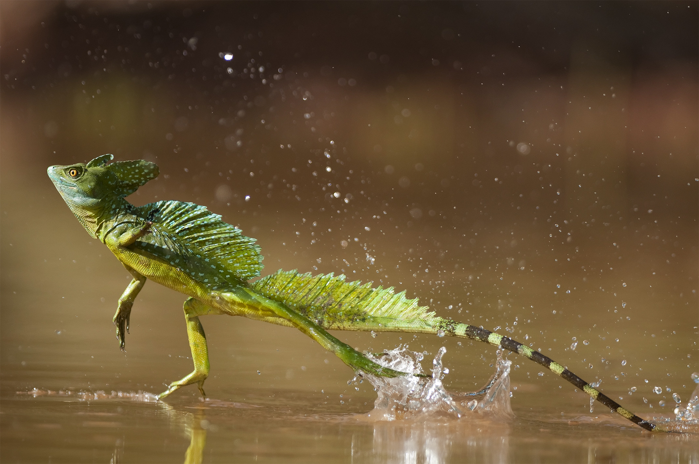

Back
Basiliscus

Their preditors are large birds, snakes, fish, and other reptiles.
Their can run on water. They usually do this to flee from preditors.
Their nickname for the Basiliscusis the "Jesus Lizard",
because of their ability to run on water.